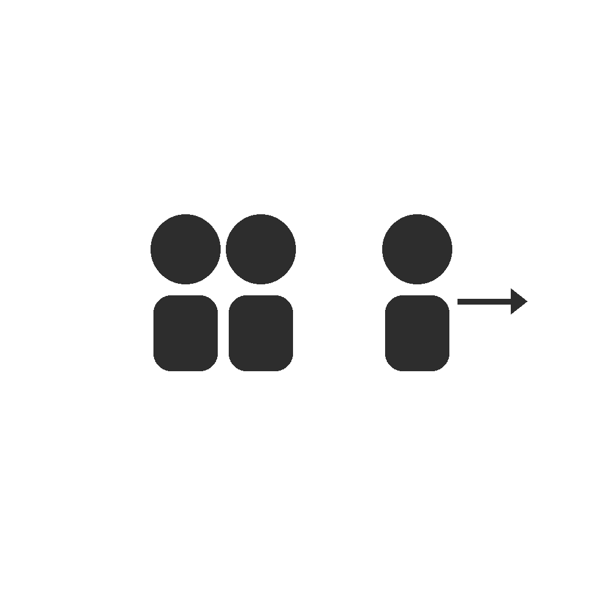
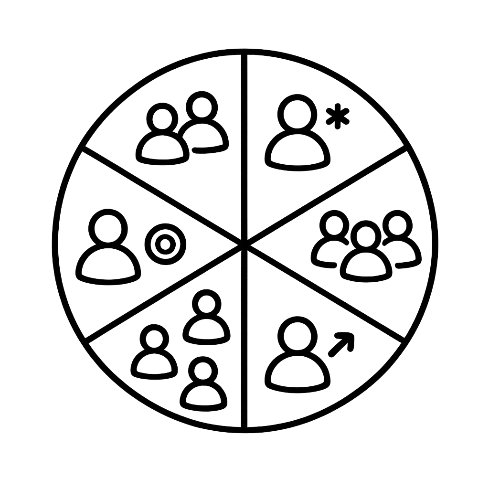
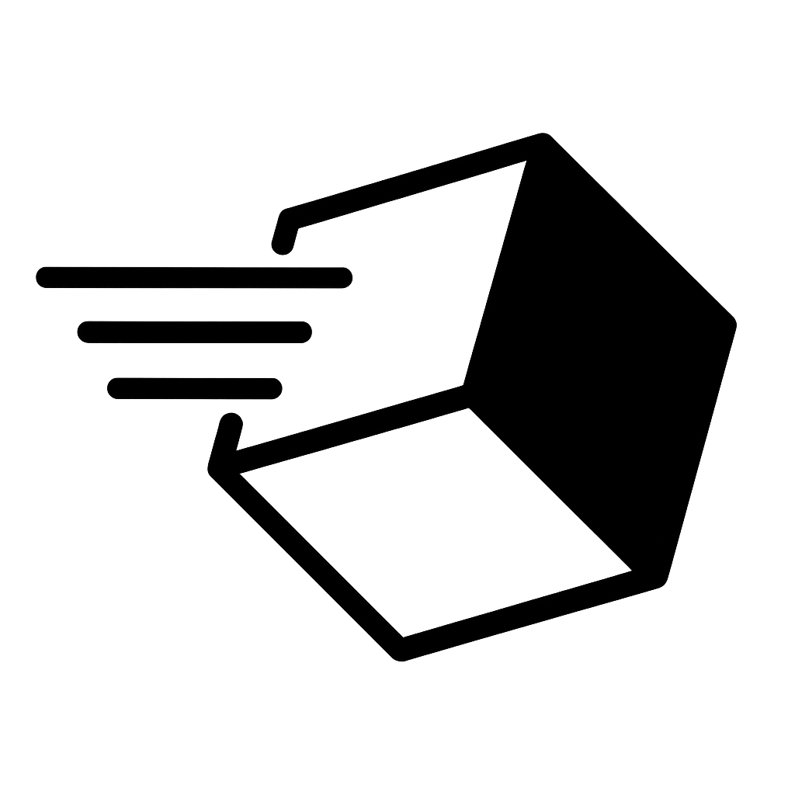
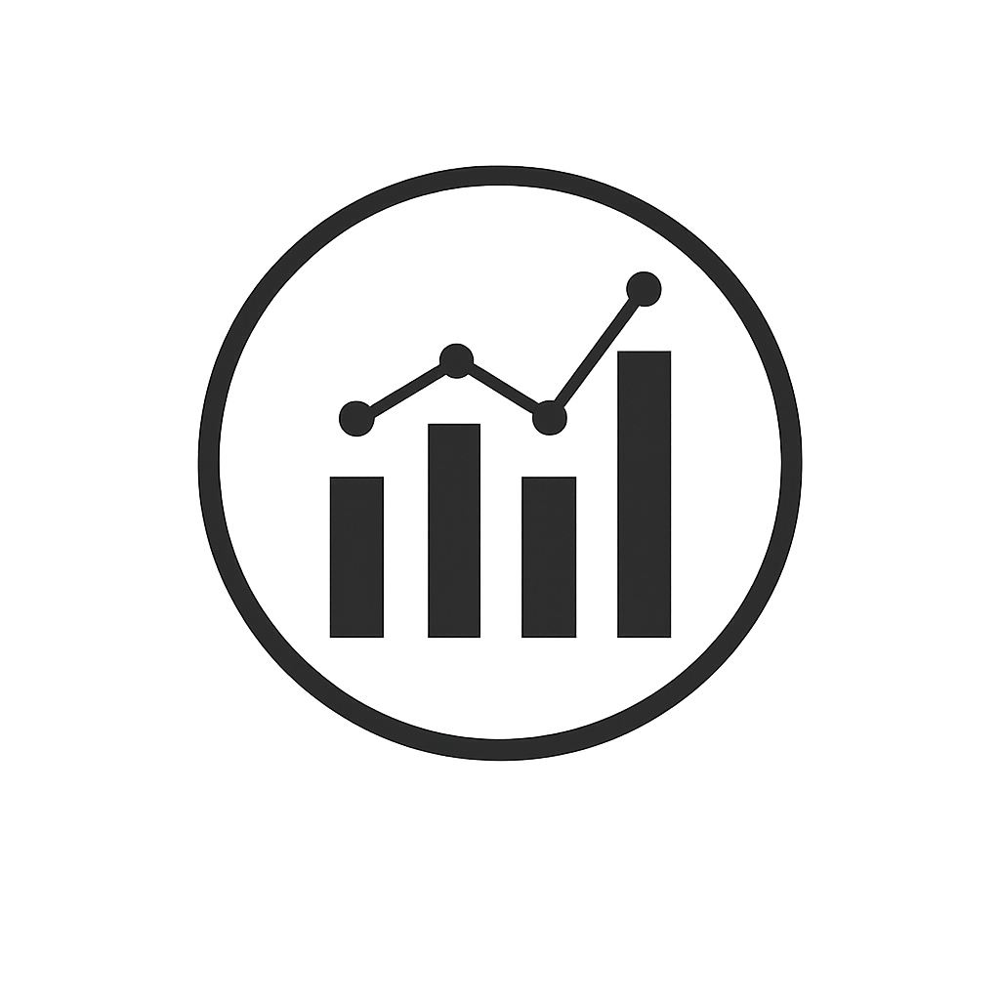
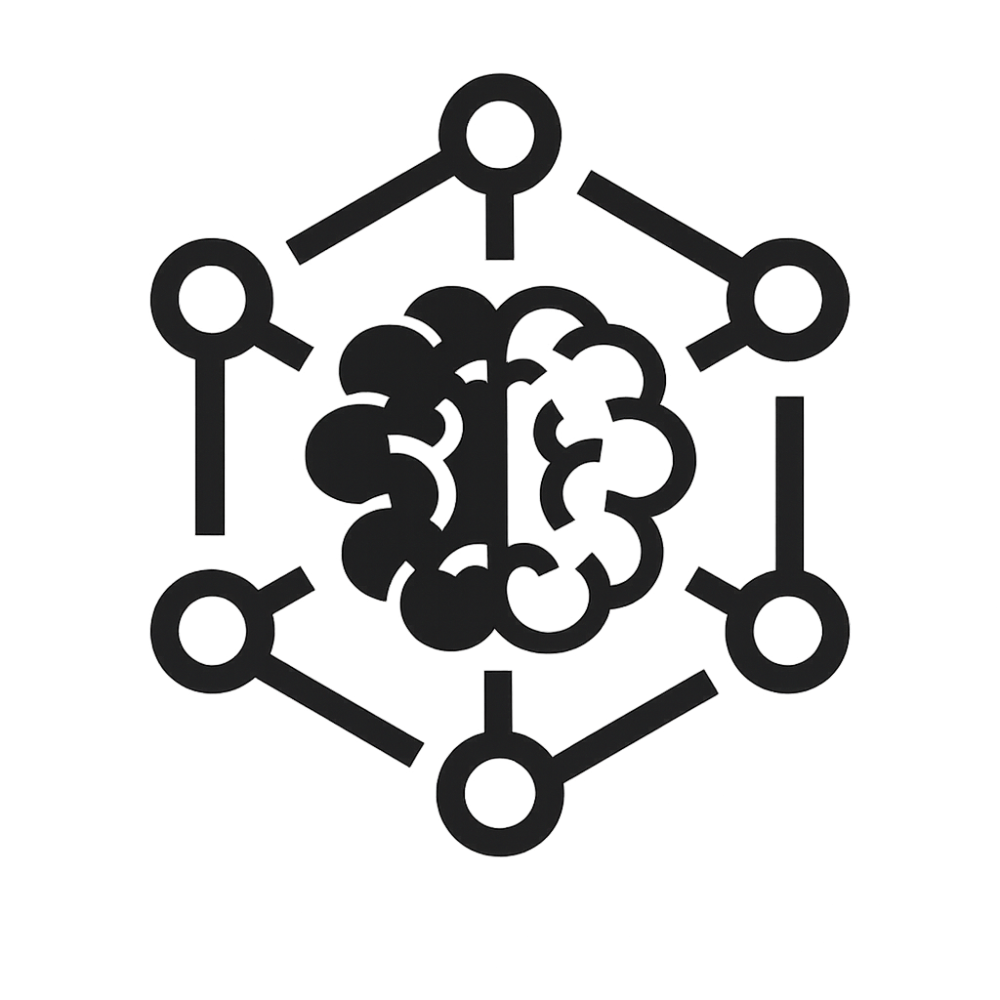

Olá, sou Carlos.
Data Scientist com background em Engenharia de Produção. Desenvolvo soluções de Machine Learning end-to-end com foco em impacto real de negócio — da análise exploratória ao deploy em produção.

Churn + A/B Testing + Uplift Modeling
Pipeline de retenção de 3 camadas: churn prediction (ROC-AUC 0,776), teste A/B (p=0,008, ROI 51,7%) e uplift T-Learner com 4 perfis de clientes. Dashboard em produção no Streamlit.

Customer Value Segmentation
Pipeline end-to-end de segmentação de clientes com deploy em AWS. 35 clientes VIP identificados, responsáveis por 24% da receita.
.png)
Health Insurance Cross-Sell Ranking
Modelo de ranking para priorização comercial em cross-sell de seguros. Deploy via API com integração ao Google Sheets.
Rossmann Sales Forecast
Previsão de vendas para mais de 1.000 lojas com XGBoost e Optuna. API em produção com bot no Telegram para consultas em tempo real.

Marketplace Delivery Dashboard
Painel gerencial interativo para monitoramento de KPIs operacionais de um marketplace de food service.

Global Restaurant Analytics
Dashboard interativo com análise global de restaurantes Zomato segmentado por país, cidade e tipo de culinária.

Machine Learning Models Evaluation
Estudo comparativo de algoritmos de classificação, regressão e clusterização com análise de métricas e trade-offs.
👋 Entre em contato